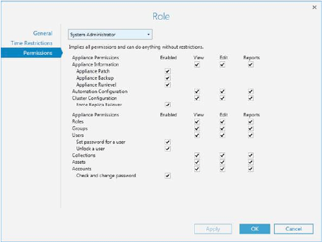
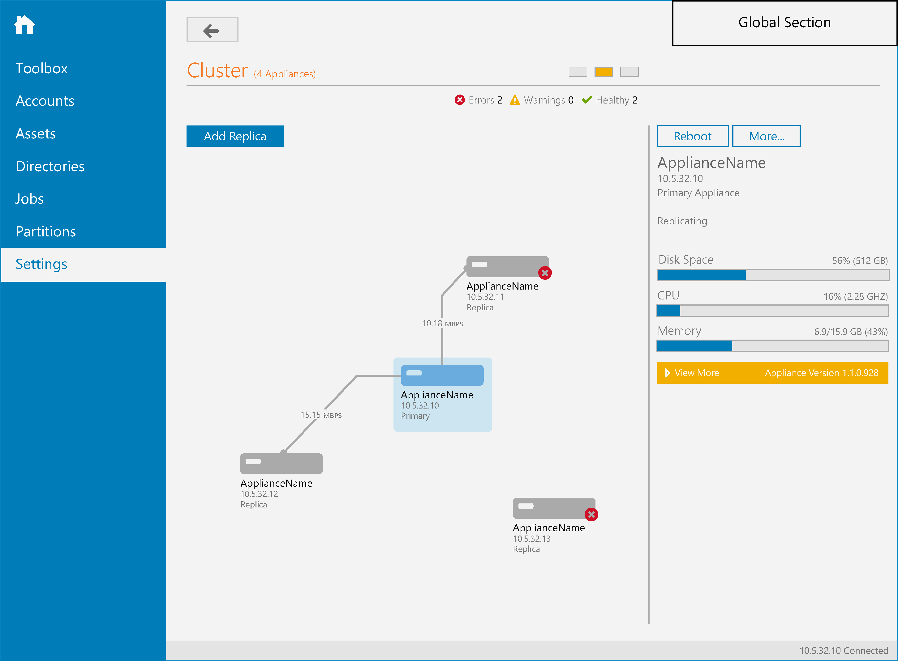
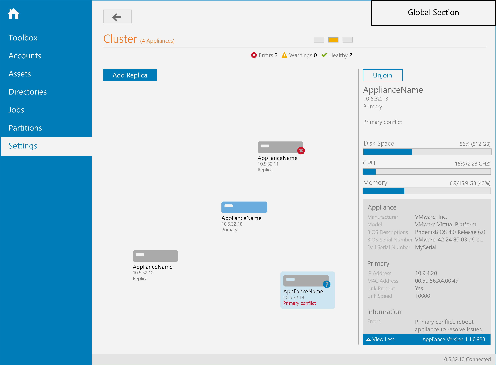
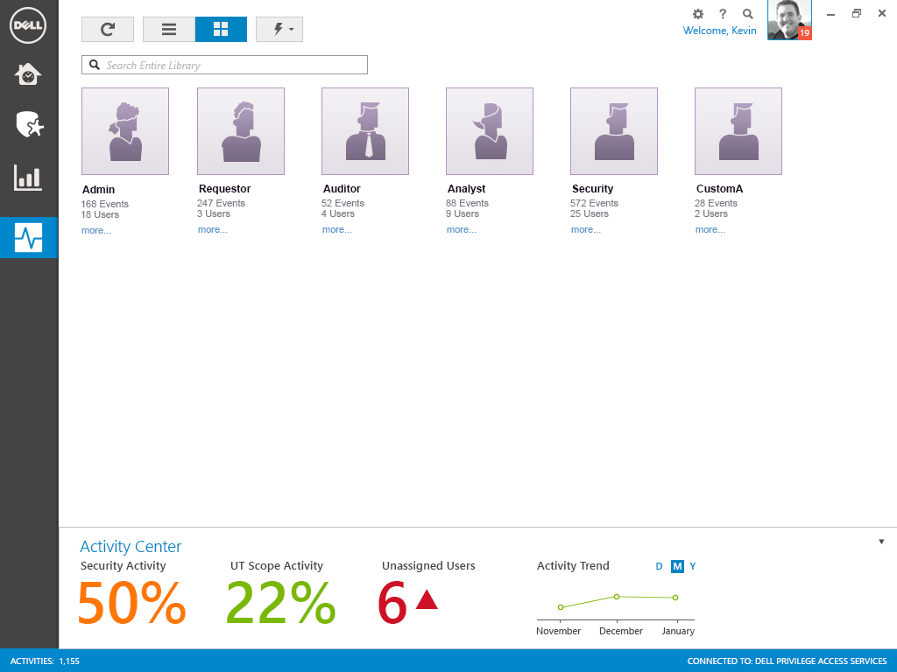
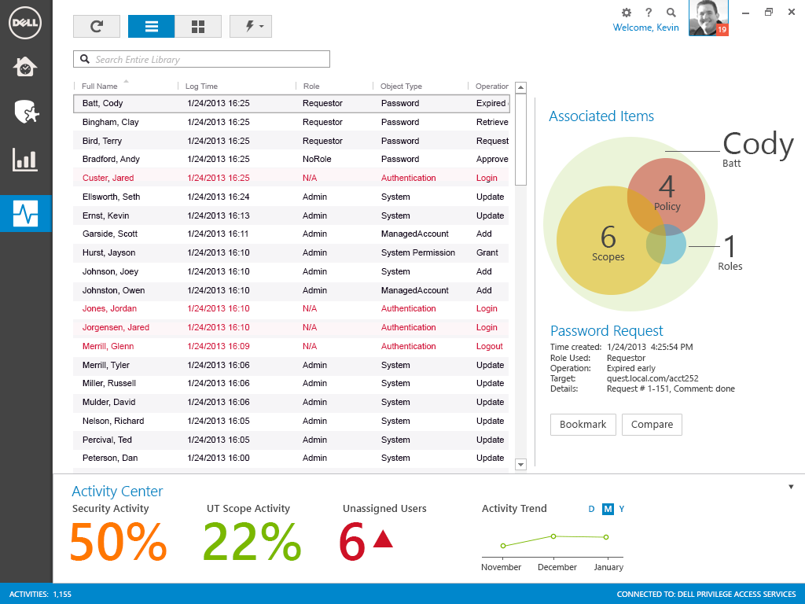
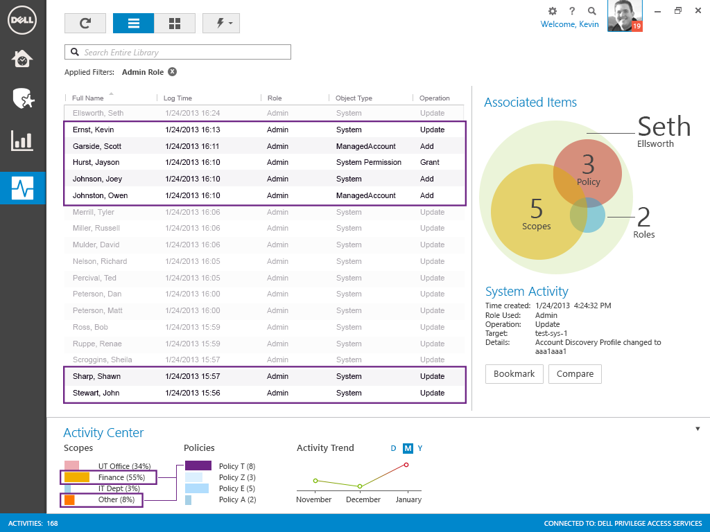
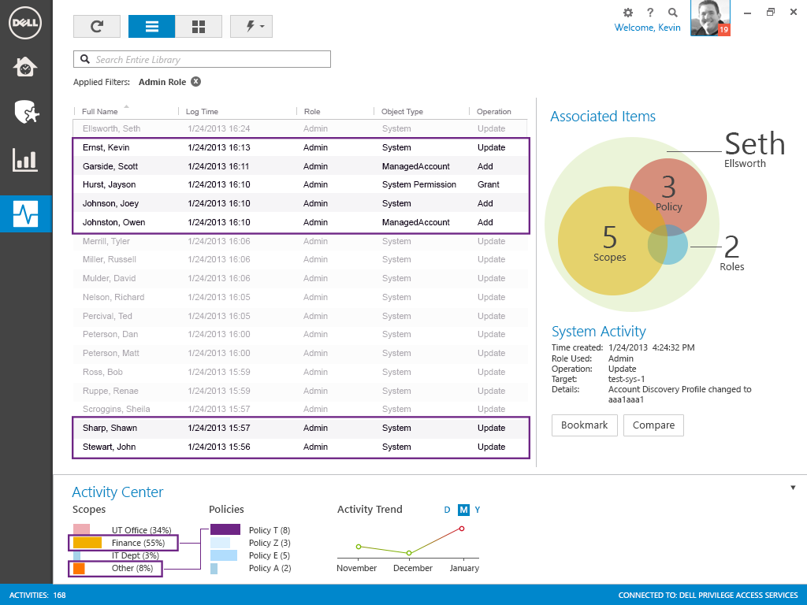

Dell One Identity Safeguard, or Safeguard, is a product that securely stores, manages, records and analyzes passwords, sessions, and files.
High-level goals:
Take three legacy products and role them into a single, easy to use, product.
Create a product that was easier to use without a Ph.D. in IT administration.
Create a mobile first experience that is also responsive.
Help create guidelines for desktop (WPF) applications, which were currently unsupported by Dell.
I led the User Experience for Safeguard working with one other individual who was in charge of the UX Architecture.
Being on a very lean team meant that I was in charge of seeing out the interaction, visual, and even some of the graphic design for this product.
TThere was a lot to learn from a legacy product. Who does it serve, who are the users, and who are the "super" users? With initial research, we were able to start lumping into 3 types the users the end-user, administrator, and auditor.
Knowing these three users helped with the initial wireframe and workflow designs. For instance, we wanted to keep the part of the product for the end-user to be easy to access. They made up the majority of our users. Not only were they the majority they were the most likely to be a mix of computer knowledge versus the administrators who were more tech-savvy and comfortable dialing in on application settings.
Working closely with hardware design and being the soul designer for branding I got to make sure that the experience out of the box was above the norm.
The hardware instructions were originally a small pamphlet. Initial testing showed that the small pamphlet was tossed aside, even thrown away at times. We wanted to make sure that our users, even as smart as they were, had a chance to review the instructions as there were important steps to follow after receiving your new machine.
As easy as it could have been to finish with bigger and bolder instructions both of us on the team wanted to change the way IT professionals viewed instructions and who Dell was. We came up with a more elegant 'poster' and just a simple change had these professionals stopping in their tracks when they were earlier just tossing them aside.


This windows desktop application is a beast, with the ability to show only what is available based on permission, control the on-premis appliance from your own personal computer, and still gives incredible requesting functionality that the end-user needs.
Instead of showing every interaction and screen of the application, I want to show some of the more complicated experiences and the processes that got us to where we are today.
Permission Redesign

Cluster Health
 
Activity Center
  

We determined that the web portion of this product needed to be mobile first with a responsive design. The content would always be accessible from any size of device just displayed for ease for the user. Here is an example of a view that the approver role would see.